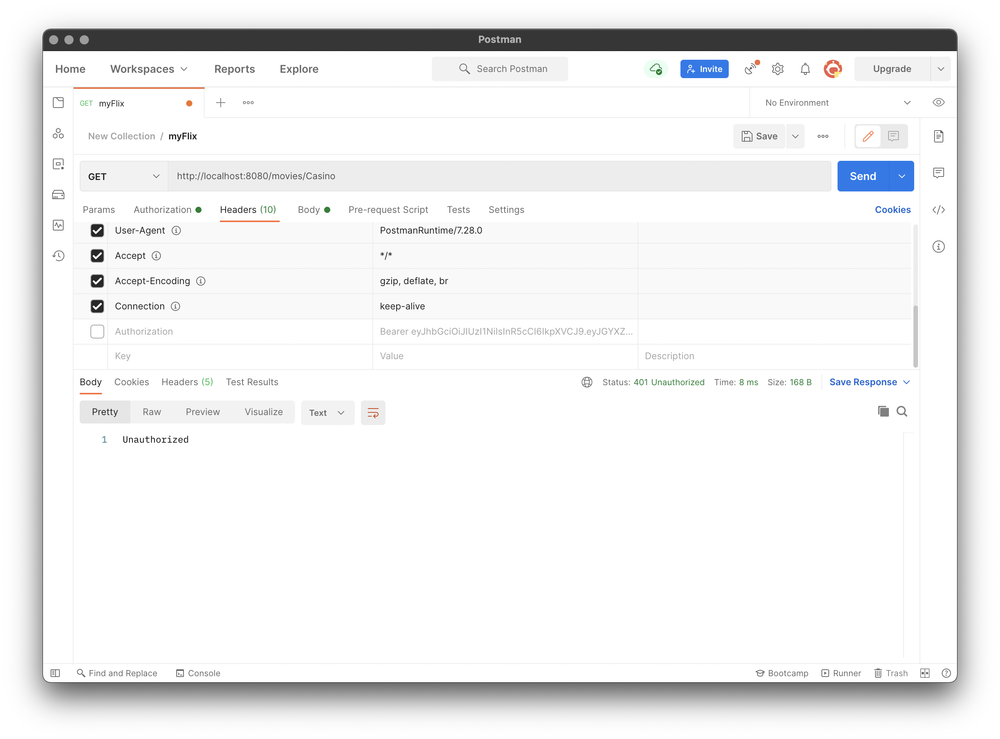
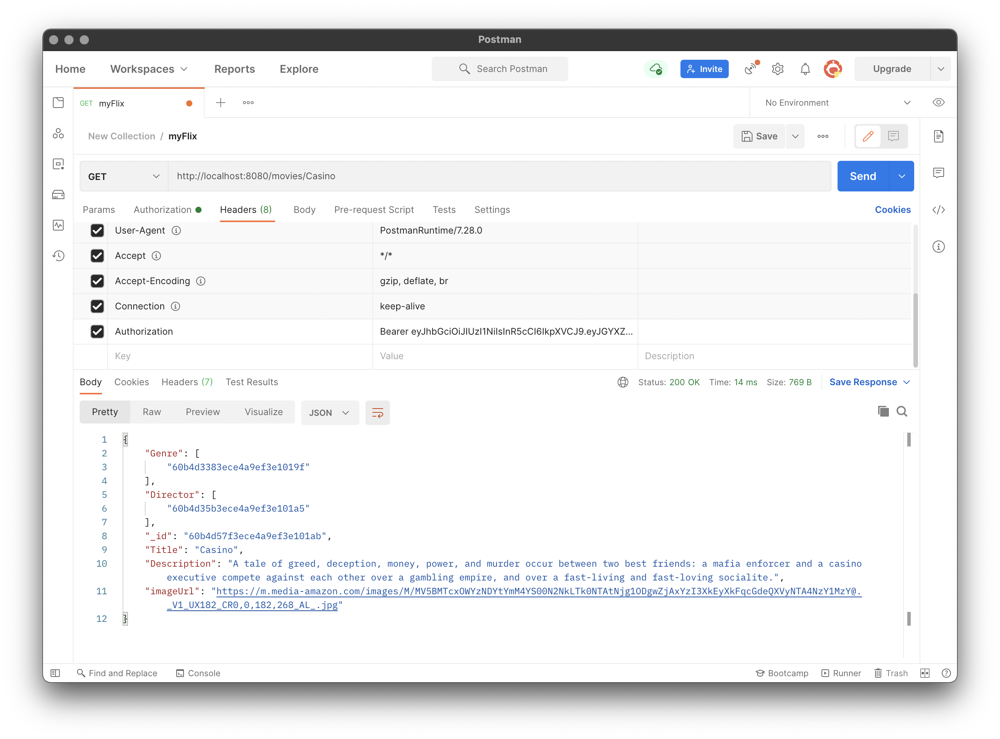

Case Study for myFlix movie app
Overview
This application displays a list of movies, directors and genres and their details. The users are able to create an
account, save their favourite movies to a list, and update their personal information.
Purpose and Context
This project was a part of my Full-Stack Immersion course at CareerFoundry. I worked alone on this project, and I used
the complete MERN (MongoDB, Express, React, and Node.js) stack. The concept of this project is to learn how can we
connect a self-built database with a self-built user interface.
Objective
My aim on this application was to show what I learned about MERN and how to use them. The problem what I solved here was
to make the connection between the server and the client-side, and display that for the users. The goal was to create a
smooth-working movie database, where the user can find their favourite movies and read about them, or just simply scroll
and browse movies.
Approach
The server-side is created as a RESTful API. Here I used Node.js and Express and pushed it to MongoDB (relational
database). The client can use 3 HTTP methods: GET (to get data), PUSH (to change data), and POST (to add data). The API
uses JSON format and has JWT authentication and has authorization as well. I used Postman to test it - see screenshots
below.


The client-side is created with React/Redux. The concept here was to create a useful single page application, with a
responsive interface to making requests and receiving responses from the server-side. It was built with different views,
like registration view, login view, profile view and a main view.
Duration
The client-side project was the longest one through my course. It took me a bit longer than what I originally scheduled
for this achievement, because I needed more time to look deep into React, how the props and states are working, and so
on.
Credit
My role in this project was Lead Developer. I had a great mentor, Renish Bashkaran, and tutor, Blaise Bakundukize. They
helped me a lot with understanding the concept and fine tuning the results.
Challenges
The most challenging part of this project was to fetch the information from the database and display it. I created
separate collections for directors and genres, which made it harder to get the data. In the end I found the solution
after reading related articles and speaking with my mentor. I now know that the easiest way is to have all the data in
one collection, but I also learned to use “populate” for cases where the data is in separate collections. Next time I
run into this situation I’ll know what to do.
Conclusion
It was a pleasure to work on this project, I learned a lot about client and server-side as well. It was nice to see how
the user can receive data from the database. React has a lot of great opportunities to display data and MongoDB is a
well-made database with a great user interface and support.